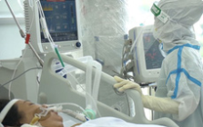
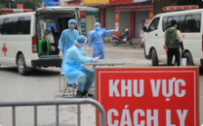

Việt Nam / Thế Giới
Thủ tướng Chính phủ ban hành Chỉ thị phục hồi sản xuất tại các khu vực sản xuất công nghiệp
Phó Thủ tướng Chính phủ Lê Văn Thành vừa ký ban hành Chỉ thị số 27/CT-TTg ngày 3/10/2021 của Thủ tướng Chính phủ về việc phục hồi sản xuất tại các khu vực sản xuất công nghiệp trong bối cảnh phòng, chống dịch bệnh COVID-19.
Diễn biến dịch
18:33 03/10/2021
THÔNG BÁO VỀ 5.376 CA MẮC MỚI
Tính từ 17h ngày 02/10 đến 17h ngày 03/10, trên Hệ thống Quốc gia quản lý ca bệnh COVID-19 ghi nhận 5.376 ca nhiễm mới, trong đó 09 ca nhập cảnh và 5.367 ca ghi nhận trong nước (giảm 110 ca so với ngày trước đó) tại 39 tỉnh, thành phố (có 2.674 ca trong cộng đồng).
Các tỉnh, thành phố ghi nhận ca bệnh như sau: TP. Hồ Chí Minh (2.461), Bình Dương (1.283), Đồng Nai (824), An Giang (147), Long An (85), Kiên Giang (75), Bình Thuận (73), Tây Ninh (54), Khánh Hòa (50), Hà Nam (39), Đồng Tháp (35), Cần Thơ (33), Cà Mau (24), Hậu Giang (20), Quảng Bình (19), Đắk Lắk (17), Quảng Trị (15), Tiền Giang (13), Bà Rịa - Vũng Tàu (13), Ninh Thuận (12), Bình Phước (12), Nghệ An (11), Bình Định (8 ), Đắk Nông (6), Phú Yên (5), Bến Tre (5), Vĩnh Long (4), Bạc Liêu (4), Hà Nội (4), Quảng Ngãi (3), Hà Tĩnh (3), Lâm Đồng (2), Trà Vinh (2), Bắc Giang (1), Gia Lai (1), Kon Tum (1), Đà Nẵng (1), Thừa Thiên Huế (1), Phú Thọ (1).
Xem thêm
Tình hình dịch cả nước
| Tỉnh/TP | Tổng số ca | Hôm nay | Tử vong |
| TP. Hồ Chí Minh | 0 | 0 | 0 |
| Bình Dương | 0 | 0 | 0 |
| Hà Nội | 0 | 0 | 0 |
| Bắc Giang | 0 | 0 | 0 |
| Bắc Ninh | 0 | 0 | 0 |
Chỉ đạo chống dịch
Ngày 6/10, Bộ Y tế ban hành "Hướng dẫn chẩn đoán và điều trị COVID-19". Hướng dẫn mới nhất này sẽ thay...
SKĐS - Đến nay, hơn 747.000 bệnh nhân COVID-19 trong tổng số mắc 818.324 ca ở nước ta đã khỏi,...

Bộ Y tế ban hành hướng dẫn chẩn đoán và điều trị COVID-19 phiên bản mới nhất
Ngày 6/10, Bộ Y tế ban hành "Hướng dẫn chẩn đoán và điều trị COVID-19". Hướng dẫn mới nhất này sẽ thay...
Sáng 6/10: Hơn 747.000 ca COVID-19 đã khỏi; Cơ sở y tế ở TPHCM không sử dụng xét nghiệm kháng thể sai mục đích
SKĐS - Đến nay, hơn 747.000 bệnh nhân COVID-19 trong tổng số mắc 818.324 ca ở nước ta đã khỏi,...
Bản tin Covid-19
Ngày 6/10, Bộ Y tế đã có công văn về việc áp dụng biện pháp phòng, chống dịch đối với người về từ TP HCM,...
Sáng 5/10, Đoàn Công tác của Bộ Y tế do Thứ trưởng Nguyễn Trường Sơn - Thành viên Tổ công tác đặc biệt...

Người đã tiêm đủ liều vaccine hoặc đã khỏi COVID-19 từ TP HCM...
Ngày 6/10, Bộ Y tế đã có công văn về việc áp dụng biện pháp phòng, chống dịch đối với người về từ TP HCM,...
Thứ trưởng Nguyễn Trường Sơn: Phú Quốc cần xây dựng phương...
Sáng 5/10, Đoàn Công tác của Bộ Y tế do Thứ trưởng Nguyễn Trường Sơn - Thành viên Tổ công tác đặc biệt...